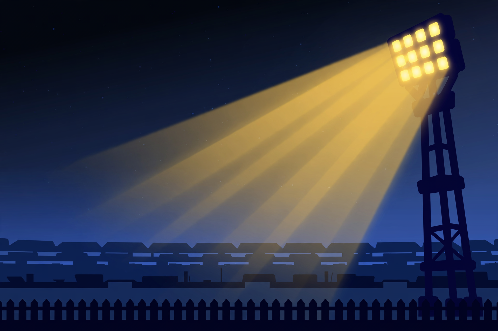
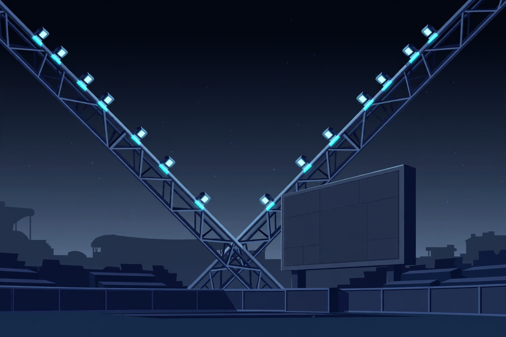

Wicket 200 — place directions

A. Floodlight bowl — SURVIVOR. Pylon landmark, asymmetric wash, picket fence.
B. Stands canyon — KILLED. Reads pagoda; canyon crowds the playfield.

C. Light rig diagonals — KILLED. Symmetric X centers dead space; weak landmark.